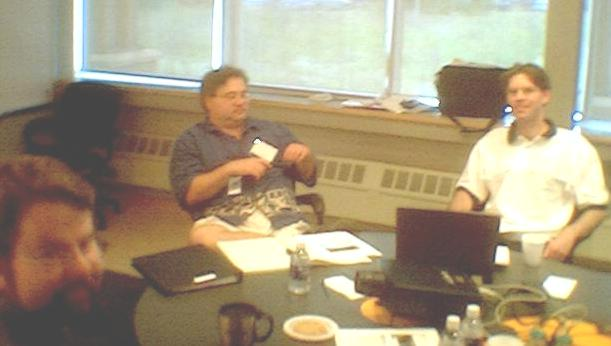
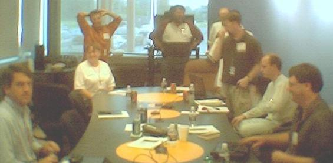
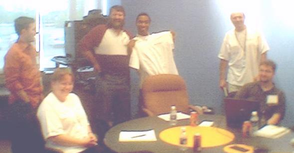
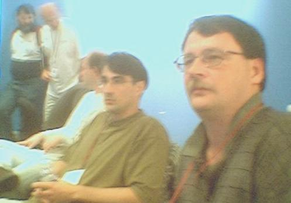
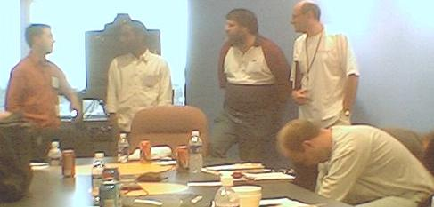

Project News

| CDT Project News |
|
| CDT News Headlines |
17 July 2002, Ottawa Canada
First CDT face-to-face meeting with QNX, Rational, Red Hat and Montavista.
Historic meeting of ~20 stakeholders map out a new direction for the CDT and make commitments to the Eclipse CDT Project.
View MS PowerPoint Slides of the topics discussed.
Thanks to Brian Moyle, from MontaVista Software, for snapping the following photos of this historic event.
Names are entered for people as they appear left to right, or clockwise, from center bottom as appropriate.
|  |
Michael Lemke(QNX), John Prokopenko (Rational), Sebastien Marineau (QNX) |  |
Brian Eliot (MontaVista), Judy N. Green (QNX), Tom Tromey (Red Hat), Peter van der Veen (QNX), Mikhail Khodjaiants (QNX), John Healy (Red Hat), Keith Seitz (Red Hat), Doug Schaefer (Rational) |
|
|  |
Judy N. Green (QNX), Tom Tromey (Red Hat), Peter van der Veen (QNX), Alain Magloire (QNX), Mikhail Khodjaiants (QNX), John Healy (Red Hat) |
 |
Peter van der Veen (QNX), Mikhail Khodjaiants (QNX), Keith Seitz (Red Hat), Brian Moyle (MontaVista), Doug Schaefer (Rational) |
|
|  |
Tom Tromey (Red Hat), Alain Magloire (QNX), Peter van der Veen (QNX), Mikhail Khodjaiants (QNX), Keith Seitz (Red Hat) |
|
||